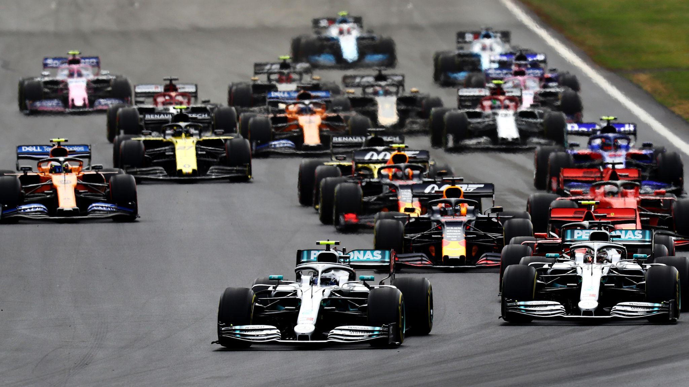
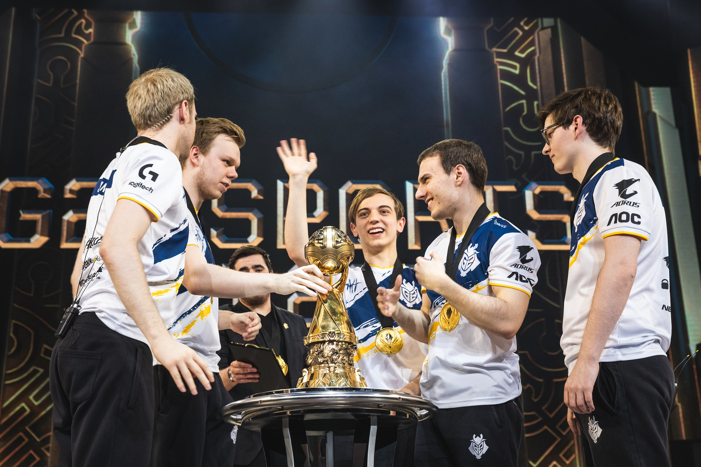

Practicante
Actualmente no practico ningún deporte. En su día participé en competiciones de judo, natación y atletismo.
Afición
Motor
Como aficionado, sigo el mundo del motor. El mundo que más sigo es el de la Formula 1.
Deportes electrónicos
La otra cara de los deportes es la de los deportes electrónicos. Existen muchas ligas y competiciones de deportes electrónicos para disintos juegos. El juego con la mayor repercusión actualmente es el League of Legends. De este juego sigo el campeonato europeo, LEC, y los mundiales
